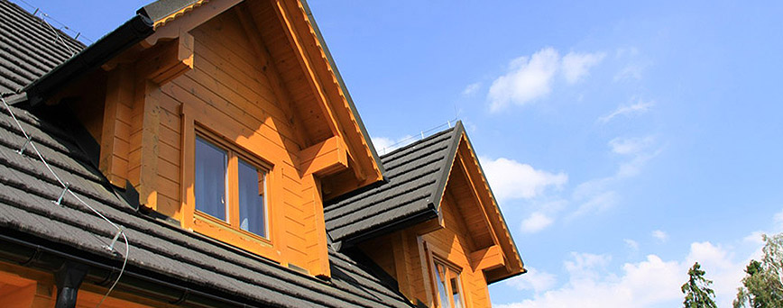

Okna i drzwi
Drewniane okna i drzwi
Drewniane okna i drzwi to nie tylko elegancki wygląd, ale przede wszystkim wysoki komfort i oszczędność.
Drewniane okna bardzo dobrze utrzymują ciepło i wygłuszają dźwięki z zewnątrz. Nasze technologie pozwalają na wyprodukowanie drzwi i okien o indywidualnym kształcie i fasonie. Drewniane drzwi to estetetyka wykończenia i wysoka jakość.
Stosując zaawansowane techniki wykończenia drewniane okna i drzwi Eko Domy są odporne na warunki atmosferyczne i mechaniczne uszkodzenia.